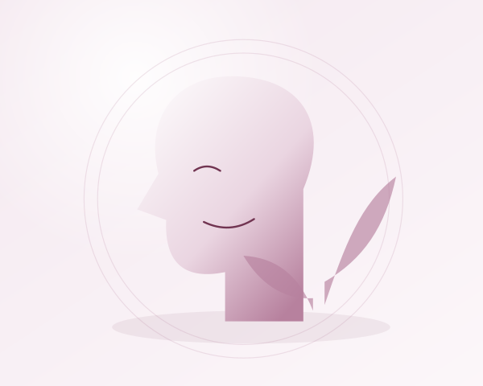

Além da estética: como a saúde bucal influencia o bem-estar
Um sorriso pode fazer parte da forma como nos apresentamos, mas a saúde bucal não se resume à aparência. Ela participa de experiências simples e importantes: comer com conforto, conversar, perceber sabores e viver a rotina sem incômodos na boca. Pensar nesse cuidado de maneira ampla é reconhecer suas diferentes funções.

Mastigar com conforto faz diferença
O Ministério da Saúde destaca a importância de uma boa mastigação para o processo digestivo e o aproveitamento dos alimentos. Dentes, gengivas e outras estruturas da boca trabalham juntos nessa tarefa. Quando há dor, perda dentária ou uma prótese que machuca, comer pode se tornar difícil.
Essas dificuldades merecem ser compartilhadas na consulta. Evitar determinados alimentos por desconforto, mastigar apenas de um lado ou sentir que algo mudou são informações úteis para a avaliação. Não é preciso considerar o incômodo uma consequência inevitável da idade ou da rotina.
Conforto também é um objetivo do cuidado
Boca seca, feridas e irritações podem interferir na fala, na mastigação e na deglutição. A página de saúde bucal do Ministério da Saúde explica que a redução da saliva pode ter diferentes causas, inclusive o uso de alguns medicamentos, e precisa de orientação individual.
Quem usa próteses também deve observar a adaptação. Peças soltas ou que provocam lesões precisam ser avaliadas, assim como mudanças na dificuldade para mastigar. O acompanhamento não se encerra quando um tratamento termina: as necessidades podem mudar ao longo do tempo.
Autoestima sem um padrão único de sorriso
O bem-estar e a autoestima estão entre os aspectos relacionados à saúde bucal citados pelo Ministério da Saúde. A maneira como cada pessoa vive essa relação, porém, é particular. Cuidar não significa buscar um formato, uma cor ou um resultado estético igual para todos.
Uma conversa respeitosa abre espaço para explicar o que incomoda, o que é prioridade e quais expectativas existem. A indicação de qualquer tratamento deve considerar as condições de saúde e as necessidades individuais, sem promessas de transformação emocional.
Uma visão integrada da saúde
Na consulta odontológica, vale falar também sobre a saúde geral, os medicamentos em uso e as mudanças percebidas na rotina. Essas informações ajudam o profissional a compreender o contexto do cuidado e, quando necessário, a orientar o acompanhamento com outros profissionais.
Isso não significa que um procedimento odontológico resolva todas as questões de bem-estar. Significa reconhecer que a boca faz parte do corpo e que escuta, informação e atenção às necessidades da pessoa ajudam a construir um cuidado mais coerente.
Por onde começar
- Mantenha escovação com creme dental com flúor e limpeza entre os dentes.
- Observe mudanças na boca e dificuldades para comer ou falar.
- Procure avaliação para feridas que não cicatrizam ou alterações novas, mesmo sem dor.
- Leve à consulta suas dúvidas e expectativas, além dos sintomas.
Cuidar da saúde bucal é preservar funções, buscar conforto e ter espaço para fazer escolhas informadas. A estética pode fazer parte dessa conversa, mas não precisa definir todo o seu significado.
Fontes consultadas
Conteúdo original de caráter educativo, elaborado com base nas orientações acima. Não substitui uma avaliação individual.